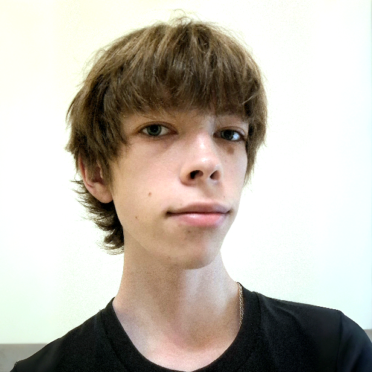
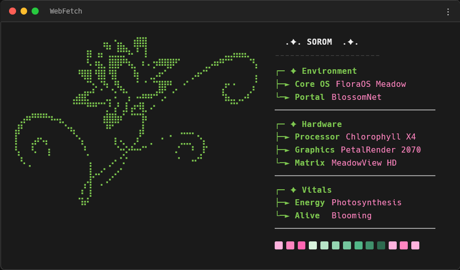
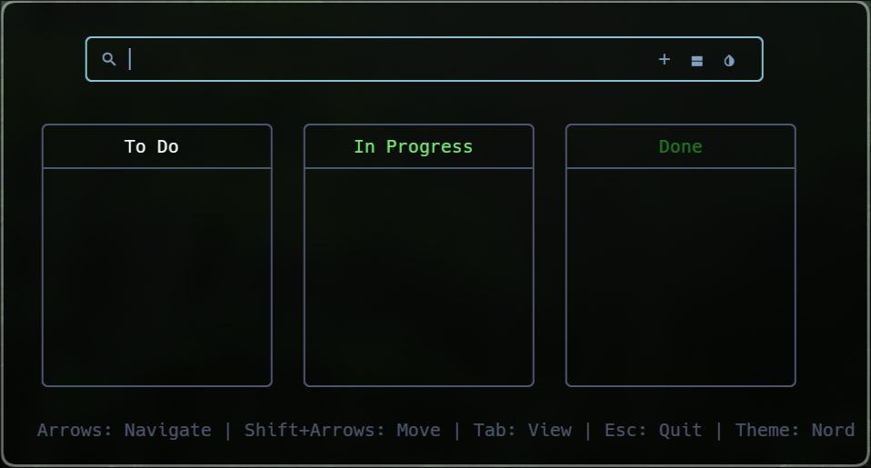

Skills
- Programming Languages: JavaScript, TypeScript, Python, Bash
- Web Development: HTML5, CSS3, Node.js, REST API, Async JavaScript
- Databases & Tools: MySQL, SSMS, PostgreSQL
- Operating Systems & Linux: NixOS, Ubuntu, Arch Linux, Shell Scripting, System Administration
- Design & UI/UX: Figma
Education
Lviv Polytechnic National University
IT College (Ukraine)
Experience
None (Open to opportunities, internships and open-source projects)
Projects

JavaScript / CSS / HTML
A browser-based system monitor inspired by neofetch. Features dynamic hardware detection and custom UI themes.

TODOTUI
GitHub ↗c++ [AI]
A lightweight, customizable Terminal User Interface (TUI) task manager with themes and config options.
ListMe [In Development]
GitHub ↗Web Development / API Integration
A web platform to track, rate, and share anime, movies, and TV shows with friends. Features release updates, notifications for new episodes, and user matching based on shared tastes.